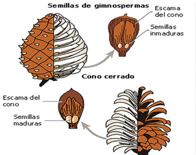

Óvulos desnudos, que originan una semilla ubicada en conos o estróbilos……….….................Gimnospermas

Óvulos encerrados en ovarios, que originan semillas que quedan retenidas en el ovario maduro o fruto…………………………………………………………………………………………………………..Angiospermas